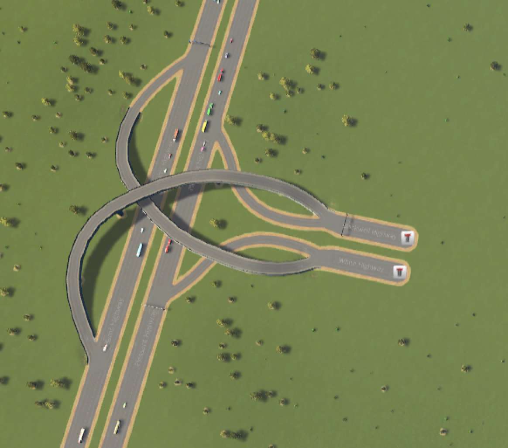
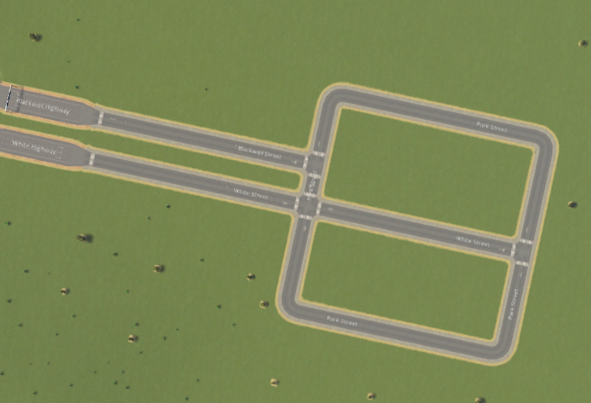
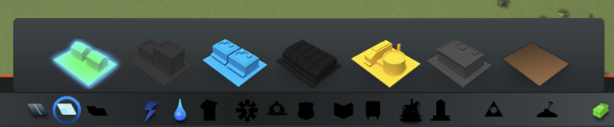

The first thing.
Back to table of contentsTo start, build a road.
Click the circle at the bottom of the screen that has a road inside it.
Build your first road by clicking on the end of the highway that has an arrow pointing into your city. [inside the dotted lines].
After you click it, drag to the place you want the end of the road to be.
There are a couple things to think about when building roads. First of all, you're going to need to get people off the highway and back onto it. You can see that the highway entrancee and exits are both one way. You'll probably want to use 2-way roads for most of your initial city. I like to start off simple and do some big rectangles.
To be most efficient, make them straight roads and make them the size so that the small little boxes alongside them don't overlap. What are those little boxes? You're about to find out in "Zoning"
Next to the road, there will be zones.Click on the zoning tool [the circle next to the road circle that has four squares in it] and click next to the road.
The space next to the road will fill up with green squares. Light green is low density residential, light blue is low density commercial, yellow is industry, dark green [high density residential], which, like dark blue [high density commercial] and lightest blue [office] will not be unlocked. Click on your desired zone to be able to place whatever it is down.
Your citizens will need electricity. The two starting options for getting electricity are wind tubines and coal power plants. You should use a coal power plant to get started with your city.
Your citizens will also need water and plumbing services